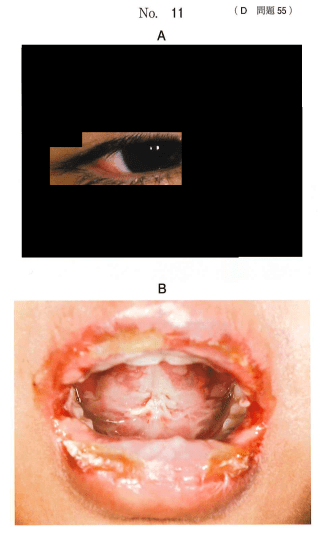
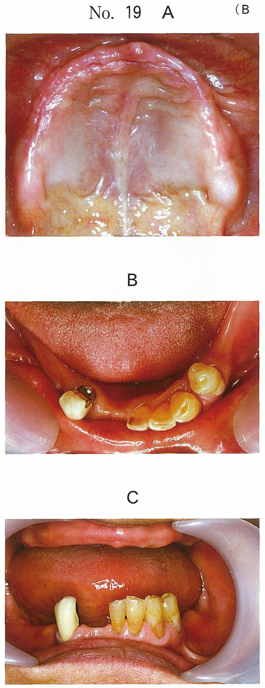
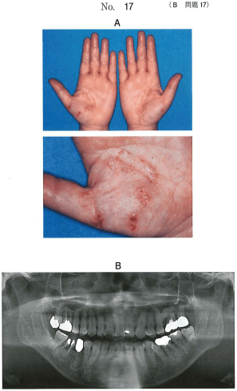
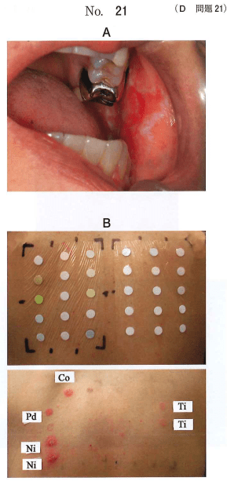
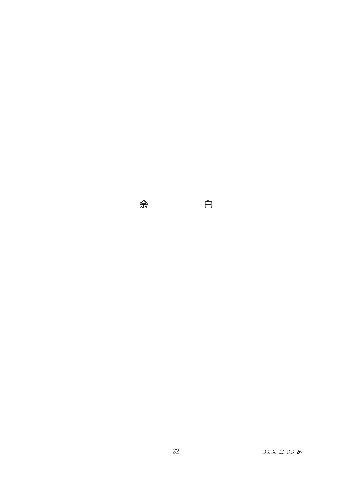
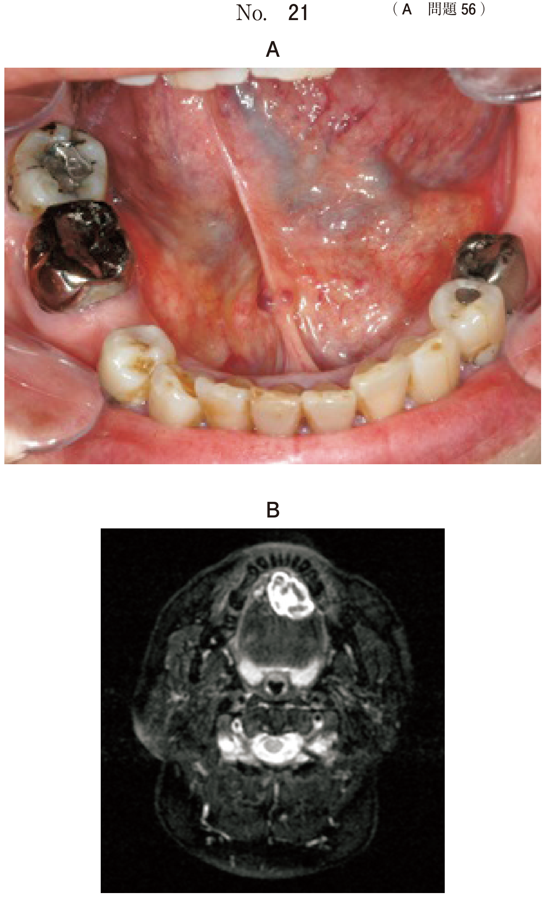

アレルギー性疾患
1. Stevens-Johnson症候群と薬疹
多形滲出性紅斑（erythema exsudativum multiforme）
皮膚および粘膜に紅斑、水疱、びらんを生じる急性非化膿性炎症性疾患である。皮膚のみの軽症型と、粘膜障害や全身症状を伴う重症型に分けられる。
- 原因：HSV、マイコプラズマなどの感染症、薬剤（サルファ剤、抗菌薬、NSAIDs、抗てんかん薬）、食品など
- 病態：アレルギー反応が関与。薬剤開始から1〜3週以内に発症
- 前駆症状：発熱、倦怠感、頭痛
Stevens-Johnson症候群（SJS）＝ 皮膚粘膜眼症候群
多形滲出性紅斑の重症型で、高熱・全身倦怠感を伴い、口唇・口腔、眼、外陰部など全身の粘膜に紅斑・びらん・水疱が多発する。
- 口腔症状：口唇の出血性びらん・血痂（出血性痂皮）、口腔咽頭粘膜のびらん・偽膜形成。高度な疼痛で摂食障害をきたす
- 眼症状：結膜充血、偽膜形成、角膜混濁（後遺症あり）
- 皮膚症状：非典型的ターゲット様紅斑（標的状紅斑）、弛緩性水疱
SJSとTENの体表面積による分類
| 分類 | 表皮剥離面積 | 特徴 |
|---|---|---|
| SJS | 体表面積の10%未満 | 粘膜症状が主体 |
| SJS/TENオーバーラップ | 10〜30% | 移行型 |
| TEN（中毒性表皮壊死融解症） | 30%超 | 広範な表皮壊死 |
原因薬剤（歯科関連で重要）
| 薬剤群 | 代表的薬剤 |
|---|---|
| 抗菌薬 | サルファ剤、アミノペニシリン系（アモキシシリン）、セファロスポリン系、フルオロキノロン系 |
| NSAIDs | ロキソプロフェン、ピロキシカム |
| 抗てんかん薬 | カルバマゼピン、フェニトイン、ラモトリギン |
- 原因薬剤の即時中止が最優先
- 副腎皮質ステロイドの全身投与
- 免疫抑制剤投与、免疫グロブリン大量静注
- 口腔内の清拭、栄養補給（経管・中心静脈栄養）
薬疹の原因特定検査
| 検査 | アレルギー型 | 方法・特徴 |
|---|---|---|
| プリックテスト | I型（即時型） | 皮膚に試薬を置き針で刺入。15〜20分後に膨疹を判定 |
| パッチテスト | IV型（遅延型） | 背部に試薬を貼付。48h・72h・1週間で判定 |
| リンパ球刺激試験（DLST） | IV型 | 患者リンパ球を疑わしい薬剤と培養し増殖反応を測定。対照の181%以上で陽性 |
| 好塩基球活性化試験（BAT） | I型 | フローサイトメトリーでCD63/CD203c発現を測定 |
| 内服試験（チャレンジテスト） | 全型 | 最も信頼性が高いが危険性も高い。専門医の管理下で実施 |
抗菌薬やNSAIDsの有害作用で高熱と粘膜の紅斑を伴う重症薬疹を特徴とするのはどれか。1つ選べ。
b 医原性Cushing症候群
c Stevens-Johnson症候群
d 薬剤性ネフローゼ症候群
e 薬剤性Parkinson症候群
【解説】SJSは薬剤によるアレルギー反応で高熱・粘膜のびらん・紅斑を伴う重症薬疹である。Reye症候群はアスピリンと関連する脳症＋肝障害で、薬疹ではない。
16歳の女子。口腔内の疼痛を主訴として来院した。1週前に感冒様症状があったため内科を受診し内服薬を服用したところ、翌日から発熱、口腔内の疼痛、皮膚の水疱および眼の異物感が出現したという。特記すべき既往はない。初診時の眼の写真（別冊No.11A）と口腔内写真（別冊No.11B）を別に示す。
最も考えられるのはどれか。1つ選べ。

b 帯状疱疹
c Behcet 病
d 偽膜性カンジダ症
e Stevens-Johnson 症候群
【解説】内服薬服用後の発熱＋口腔内疼痛＋皮膚水疱＋眼症状の組み合わせはSJSの典型的臨床像。GVHDは移植後、Behcet病は反復性口腔潰瘍で眼はぶどう膜炎が主体。
63歳の男性。口腔内の疼痛を主訴として来院した。7日前から智歯周囲炎のため抗菌薬を服用している。昨日から熱発し、眼の充血と全身の皮膚の発赤とが生じ、口腔内全体がしみるようになり食事が困難になったという。初診時の口腔内写真（別冊No.21）を別に示す。血液検査の結果を表に示す。
この疾患の病態はどれか。1つ選べ。

b 菌交代現象
c 自己免疫疾患
d 日和見感染症
e アレルギー性疾患
【解説】抗菌薬服用後の発熱＋眼充血＋皮膚発赤＋口腔内びらんはSJSの臨床像。病態はアレルギー性疾患（薬剤に対する過敏反応）である。菌交代現象は抗菌薬使用後の常在菌バランス変化で、口腔カンジダ症などをきたす。
抜歯後にアモキシシリン水和物とロキソプロフェンナトリウム水和物を投与したところ、3日目に38.5℃の発熱、全身倦怠感、口唇の水疱とびらん及び皮膚に結節性紅斑が現れた。
誘因を特定するための検査はどれか。3つ選べ。
b 蛍光抗体直接法
c プリックテスト
d リンパ球刺激試験
e 好塩基球活性化試験
【解説】薬疹の原因薬剤を特定する検査として、プリックテスト（即時型）、DLST（遅延型）、BAT（即時型）が適切。HLA検査は薬疹の発症リスク予測に使われるが原因特定ではない。蛍光抗体直接法は天疱瘡・類天疱瘡の診断法。
2. 歯科用金属アレルギー
病態
歯科用金属が唾液によってイオン化し、口腔粘膜や消化管から吸収される。イオン化金属がハプテンとして生体タンパクと結合し、IV型（遅延型）アレルギーを惹起する。感作が成立すると、金属との接触から24〜72時間後に症状が出現する。
原因金属
| 金属 | パッチテスト陽性率 | 備考 |
|---|---|---|
| ニッケル | 約25% | 最も陽性率が高い |
| パラジウム | 約16.6% | 歯科保険材料に多用 |
| コバルト | 高い | ニッケルと交差反応 |
| クロム | 中程度 | ステンレスに含有 |
| 水銀 | 中程度 | アマルガム由来 |
口腔内の症状
- 口腔扁平苔癬様病変：金属修復物に接した頬粘膜にレース状の白色病変（Wickham線条）
- 接触性口内炎・口唇炎：金属との接触部位のびらん・発赤
- 味覚異常、舌炎、口角炎
全身症状として掌蹠膿疱症、全身の皮膚炎・湿疹がみられることがある。
パッチテストの方法
- 背部（肩甲骨間のやや下方）に試薬を貼付
- 48時間後・72時間後・1週間後の3回判定
- 歯科用金属（特にPd）は反応が遅いため、1週間判定まで必ず行う
追加検査
- 病理組織学検査：口腔扁平苔癬様病変の確定診断
- 金属修復物元素分析：修復物に含まれる金属元素の同定
治療
原因となった金属修復物を除去し、メタルフリー修復物（オールセラミック、ジルコニア等）への置換を行う。副腎皮質ステロイド軟膏は対症療法であり、原因療法にはならない。
51歳の女性。口腔内の金属修復物に関する精査と加療のため、皮膚科からの紹介により来院した。皮膚科では手掌の疾患に対して副腎皮質ステロイド外用薬の投与を受けているという。初診時の手掌の写真（別冊No.17A）とエックス線写真（別冊No.17B）を別に示す。
まず行うべき対応はどれか。1つ選べ。

b 金属修復物の研磨
c 金属修復物の除去
d 金属修復物装着歯の抜去
e 歯科用金属のパッチテスト
【解説】掌蹠膿疱症で皮膚科から紹介された症例。金属アレルギーの関与が疑われるが、まず原因金属を特定するためにパッチテストを行う。いきなり金属修復物を除去するのは不適切。
50歳の女性。口腔内の疼痛を主訴として来院した。1年前から違和感に気付いており、1か月前から左側頰粘膜に接触痛を感じるようになったという。口腔内写真（別冊No.21A）と、ある検査の写真（別冊No.21B）を別に示す。
追加して行う検査はどれか。2つ選べ。

b 味覚検査
c 唾液成分検査
d 病理組織学検査
e 金属修復物元素分析
【解説】口腔扁平苔癬様病変が疑われ、パッチテストで金属に陽性反応がみられた症例。追加検査として、病変の確定診断のための病理組織学検査と、口腔内金属の成分を特定するための元素分析が必要。
61歳の女性。左側頬部の疼痛を主訴として来院した。2年前に自覚し、徐々に増悪してきたという。病変が限局していることから、皮膚科で歯科用金属のパッチ テストを行ったところ、Pdを含む複数の金属に陽性反応がみられた。初診時の口腔内写真（別冊No.26A）と生検時の H-E染色病理組織像（別冊No.26B）を別に示す。
適切な原因療法はどれか。1つ選べ。


b 金属修復物装着歯の抜去
c 金属修復物装着歯の咬合調整
d メタルフリー修復物への置換
e 副腎皮質ステロイド軟膏の塗布
【解説】パッチテストでPdを含む複数の金属に陽性の口腔扁平苔癬様病変。原因療法としてメタルフリー修復物への置換が適切。ステロイド軟膏は対症療法であり、研磨・咬合調整・抜歯は原因除去にならない。
3. 血管性浮腫
Quincke浮腫（血管神経性浮腫）
皮膚深層・粘膜下組織に生じる限局性の浮腫性腫脹で、血管神経性浮腫（angioneurotic edema）、血管性浮腫（angioedema）とも呼ばれる。口唇、眼瞼、粘膜、口腔に好発し、リンパ組織の豊富な部位に発症しやすい。数時間から数日続き、再発することがある。
遺伝性血管性浮腫（HAE: Hereditary Angioedema）
C1インヒビター（C1-INH）の欠損または機能低下による反復性の浮腫。常染色体優性遺伝で、ブラジキニンの過剰産生により血管透過性が亢進する。
HAEの分類
| 型 | 頻度 | C1-INH蛋白量 | C1-INH活性 |
|---|---|---|---|
| I型 | 約85% | 低下 | 低下 |
| II型 | 約15% | 正常〜増加 | 低下 |
- 反復する無痛性の口唇・顔面の腫脹
- 蕁麻疹を伴わない
- 局所の熱感・発赤を認めない
- 数日で自然消退し、再発を繰り返す
- 検査：血中C1インヒビター、補体C4（発作時ほぼ全例で低下）
HAE vs アナフィラキシーの鑑別
| 鑑別点 | HAE（遺伝性血管性浮腫） | アナフィラキシー |
|---|---|---|
| 蕁麻疹 | なし | あり |
| そう痒 | 少ない | 強い |
| 発症速度 | 緩慢（数時間） | 急速（数分〜30分） |
| アドレナリン | 無効 | 有効 |
| 抗ヒスタミン薬 | 無効 | 有効 |
| C1-INH | 低下 | 正常 |
| 補体C4 | 低下 | 正常 |
| IgE | 関与なし | 関与あり |
| メディエーター | ブラジキニン | ヒスタミン |
治療
- 急性発作時：C1インヒビター製剤の静脈注射
- 抗ヒスタミン薬、抗プラスミン薬（トラネキサム酸）
- 発作予防：ダナゾール（テストステロン誘導体）
- HANEの喉頭浮腫は気道閉塞を招き致死的となりうる
急激な口唇腫脹を呈するのはどれか。2つ選べ。
b 口唇ヘルペス
c 肉芽腫性口唇炎
d アナフィラキシー
e 遺伝性血管性浮腫
【解説】「急激な」口唇腫脹がキーワード。アナフィラキシーは数分〜30分で発症、遺伝性血管性浮腫も数時間で急速に腫脹する。粘液嚢胞は緩徐に増大、肉芽腫性口唇炎は慢性経過、口唇ヘルペスは水疱が主体で腫脹は軽度。
下唇の無痛性腫脹を主訴として来院した患者の初診時の顔貌写真（別冊No.30）を別に示す。昨日から自覚しているという。以前にも同様の症状があったが、数日で消退したという。局所の熱感と発赤は認めない。
行うべき検査はどれか。1つ選べ。

b プリックテスト
c 血中 C1インヒビター
d 血中プロカルシトニン
e 末梢血リンパ球表面抗原検査
【解説】「無痛性」「数日で消退」「再発」「熱感・発赤なし」はHAEの典型的所見。血中C1インヒビターを測定する。パッチテストは遅延型アレルギー、プリックテストは即時型アレルギーの検査。プロカルシトニンは細菌感染のマーカー。
4. アレルギー反応の分類と検査の対応
Coombs-Gell分類と歯科関連疾患
| 型 | 名称 | メディエーター | 歯科関連疾患 | 検査 |
|---|---|---|---|---|
| I型 | 即時型 | IgE、ヒスタミン | アナフィラキシー、蕁麻疹、気管支喘息 | プリックテスト、BAT |
| II型 | 細胞傷害型 | IgG、IgM、補体 | 自己免疫性溶血性貧血 | Coombs試験 |
| III型 | 免疫複合体型 | 免疫複合体、補体 | SLE、血清病 | 免疫複合体測定 |
| IV型 | 遅延型 | 感作Tリンパ球 | 金属アレルギー、接触性口内炎、薬疹 | パッチテスト、DLST |
歯科国試ではI型（即時型）とIV型（遅延型）が特に重要。